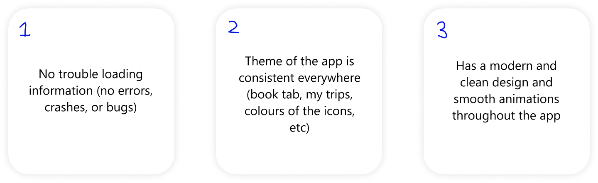

Garuda Indonesia is Indonesia’s flag carrier airline. It is a member of SkyTeam, the second-largest airline of Indonesia after Lion Air, and the only Indonesian airline that flies to Europe.
You can book their flights either by contacting their customer service, going to their website, and through their application.
As an Indonesian myself, I frequently travel from the Netherlands to Indonesia by Garuda Indonesia, and I want to book my flights easily from my phone, so therefore I frequently use their app.
However, there are lots of issues I encountered from within the app, from database issues to the design of the app. So as a UI UX designer, my research question would be:
How do I improve FlyGaruda so that the design and usability would be better for travelers flying with Garuda Indonesia?
Upon downloading FlyGaruda, I noticed something off. They have a surprisingly lower rating compared to other flight apps. This is the overall app score in Apple's App store.
I wanted to investigate the complaints and reasons why a lot of people gave the app a one star rating. Here are some of the things users say:
As you can see, many users experience errors. This is very unfortunate, as Garuda Indonesia is Indonesia’s flagship airline, yet their app is very poor.
To confirm these issues users are facing, I shall do a interview to see if these issues still exist.
I then decided to interview some Indonesians who frequently fly with Garuda Indonesia to download FlyGaruda to confirm these issues, and they said yes.
I also asked their opinion on how the app looks like (because I am a UI UX designer) and like I expected, the feedback I got are bad.
So, a few things I conclude from the testers and reviews:

They do have a problem with how the app keeps crashing and not loading information.
They have some issues with the functionalities of the app, though not that much of a big deal. .
They all think the app looks very poor and outdated, design wise.
As a UI UX designer and researcher, I cannot solve the first issue, as it's not within this project's scope. However, I can fix the second and third issue.
I first need to understand FlyGaruda from the eyes of a Garuda Indonesia user and UI UX designer. Here are some flaws I saw.

After writing some key points from FlyGaruda, I decided to look at other flight applications, like Emirates and Singapore Airlines. Why? Because these airlines are the flag carriers of their respective countries, and they are some of the world's best rated airlines (Garuda is also a world class airline, but not as high). Here are their reviews on the App Store.

I tried using their apps on a day to day basis, try to book flights, see my membership, et cetera.
Here are my main key points of these apps:
To know the principles of app design, I conducted a literature study. Here are the main principles that will be important for this project.
Make the app easy to use for users.
Make the navigation of the app predictable.
Following basic apps of navigation; like putting X in the top right hand corner, Save button at the bottom of the page, etc.
Have brand image consistency. This includes colours, themes, and navigation throughout the app (something FlyGaruda struggles with)
Loading time and white space. If something is loading or something is empty, you need to show something in order to indicate to users that the app is still working fine and not get bored of “nothing”.

I made a persona based on my research to get a grasp of what sort of user might use the FlyGaruda app and will know what design changes I will make.
TLDR: most passengers using Garuda takes domestic, business trip flights aimed to middle to high income travelers, and/or employees that have their flights reimbursed by their company.
After knowing the features and designs to improve for the users, I created a flowchart to list all the steps that the user must take to complete a task. This is to ensure that the flow of my app is sensible and well-designed.

After knowing the flow of my app, I made a wireframe (low-fidelity prototype) to demonstrate the interface elements that will exist on the pages/tabs of my app. This is to help you and I get an image of what the app will look like, minus the extra decor; just the essentials.
Using my wireframes, I realized my low fidelity designs into a high fidelity prototype using Figma. After countless iterations, this is my final proposed design of the new FlyGaruda app.
I asked 8 users to use and test my app and compare it to the original FlyGaruda app. This is very important, as I am designing it to these people who would hopefully approve and use this new design.
To sum it up, I got positive feedbacks. They stated that my design looks way cleaner and better, and feels more familiar with other flight apps the users also use.
There are some impacts to the user because of the prototype I created:
The app looks more professional, affirming confidence to flyers on Garuda Indonesia's reputation and image.
They can navigate through the app faster, because the layout of the app is more familiar to them than before (one big example is the new, less-cluttered More page)
Flyers can easily discover other cabin classes & facilities they will get when flying with Garuda Indonesia thanks to the new Home screen. This is beneficial for flyers, as they are now informed about Garuda's offerings.
In the book page, flyers have the option to book multiple city flights instead of just one way or two way flights, increasing efficiency.
However, there are also impact(s) to Garuda Indonesia.
For Garuda Indonesia, this redesign is also beneficial. As flyers now know more about Garuda's facilities, they are now more inclined to upgrade classes or purchase extra luxuries (like purchasing special meals), potentially generating more revenue.
In conclusion, based on the research, prototyping, and the feedbacks I received, I would say that I have answered my research question. Not only is the design of the app looks better, but so does the usability and familiarity of the app. I am glad that the feedbacks I received were positive.